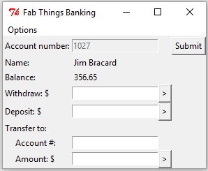
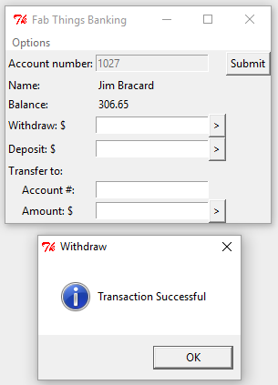
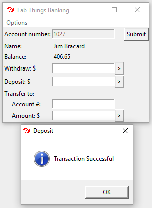
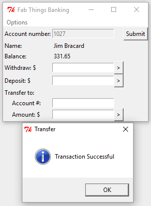
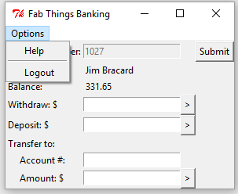
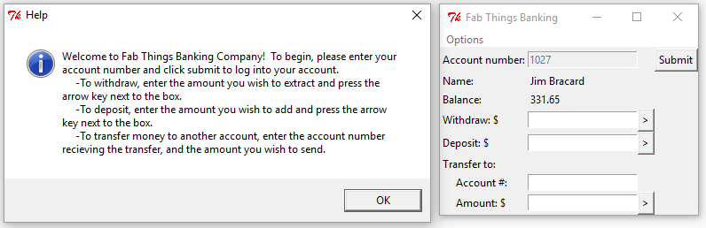
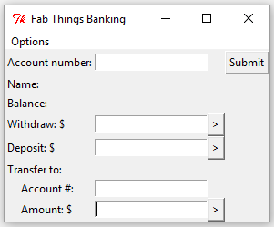

Using Canopy for the IDE, Python for the programming language, and Tkinter as a GUI, my partner and I created a program that resembles an ATM. The purpose of the program is to allow the user to use it like an ATM. They have an accont and similar abilities they can execute.
First, you need to enter your account number into the first entrytext box. After that, the program locks the account number in and displays the name of the account holder and their balance.
The user can make a deposit or a withdrawal, entering any number amount.
 The user can also make a transfer to another account (an account that needs to be created in the ATM folder so that the program can fetch that information, then display and alter it) by entering in a valid account number and an amount to transfer.
Finally, the user can click the "Options" button on the program.
Pressing "Help" gives the user a full rundown on each function of the program.
Pressing "Logout" allows the user to unlock the original account number and return the program to its original face.
